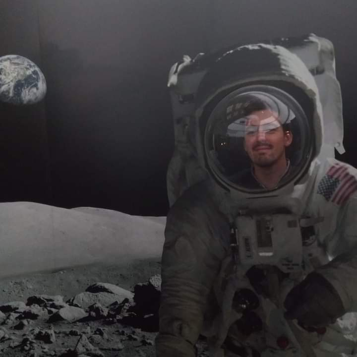

Emanuel Castanho
About Me
EXPERIENCE:
Current
Past
- 2020 - 2024 - Project Developer at the Atlantic International Research Centre (Portugal)
EDUCATION:
- 2014 - 2020 - Integrated Masters Degree in Aeronautical Engineering at the University of Beira Interior (Portugal)
- 2018 - ERASMUS Student at the Politechnika Rzeszowska im. Ignacego Łukasiewicza (Poland)
INTERESTS:
- 🛰️ Earth Observation - Experience with satellite data products derived from Sentinel-2, Terra, Aqua, Suomi-NPP, Sentinel-5P, Sentinel-3 and Sentinel-1.
- 🤖 Machine Learning - Applied to the ocean for identification and classification of large agglomerations of marinde debris and floating vegetation. I worked with multiclass classification using Random Forest, XGBoost and U-Net.
- 📊 Data Science - We live in a world full of data, it is interesting to find methods to know what stories the data can tell us.
- 👨💻 Programming - Python, Julia, R, MATLAB, MySQL, C, Fortran, HTML, CSS and JavaScript.
- ✈️ Aeronautics - My background is in aeronautical engineering with a masters thesis focused on aircraft attitude control.
- 🤿 Freediving - Strongly recommend the books Deep and Breath from James Nestor.
FOLLOW ME AT:


Do not hesitate to send a message on LinkedIn!
 Terceira Island, Azores
Terceira Island, Azores